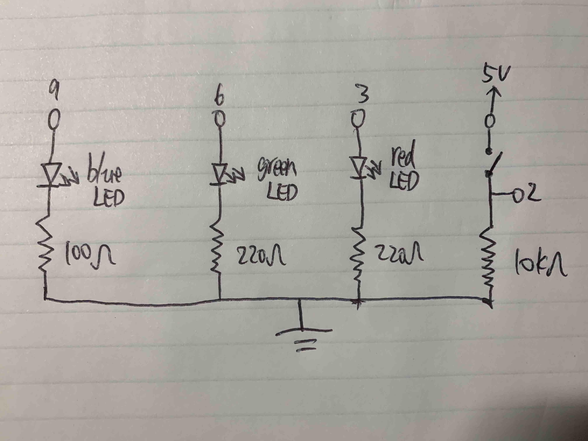
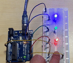

Cheng's Assignment 2 - Fade!

This is my schematic for the Fade assignment.

This is my circuit for the Fade assignment.
// Cheng Guo
// HCDE 439 - HW 2
// initialize pins, brightness, and fade amount
int pushButton = 2; // set push button on pin 2
int redLED = 3; // set red LED on pin 3
int greenLED = 6; // set green LED on pin 6
int blueLED = 9; // set blue LED on pin 9
int bigBright = 255; // how bright the LED is
int fadeAmount = 205; // how many points to fade the LED by
int maxValue = 25; // the max value to write for green LED
int shortDelay = 10; // wait for a centisecond
// the setup routine runs once when you press reset:
void setup() {
// initialize serial communication at 9600 bits per second:
Serial.begin(9600);
// initialize digital pins as input and outputs.
pinMode(pushButton, INPUT); // intialize the push button on pin 2
pinMode(redLED, OUTPUT); // initialize red LED on pin 3
pinMode(greenLED, OUTPUT); // initialize green LED on pin 6
pinMode(blueLED, OUTPUT); // initialize blue LED on pin 9
}
// the loop routine runs over and over again forever:
void loop() {
// for blue LED, it turns on and off automatically
digitalWrite(blueLED, HIGH); // turn the blue LED on
// for green LED, it fade and bright alternatively
for (int i = 0; i < maxValue; i++) { // turn the green LED on by increasing the value to it
// for red LED, it fades when I push the button
int buttonRead = digitalRead(pushButton); // read off the input from the push button
Serial.println(buttonRead); // show the input on the serial monitor
if (buttonRead == 1) { // when the button is pressed
analogWrite(redLED, bigBright - fadeAmount); // fade the red LED when pressing the push button
} else { // when the button is released
analogWrite(redLED, bigBright); // bring the red LED back when releaing the push button
}
analogWrite(greenLED, i); // write value to the green LED
delay(shortDelay); // wait for wait for a centisecond
}
for (int j = maxValue; j >= 0; j--) { // turn the green LED off by decreasing the value to it
// for red LED, it fades when I push the button
int buttonRead = digitalRead(pushButton); // read off the input from the push button
Serial.println(buttonRead); // show the input on the serial monitor
if (buttonRead == 1) { // when the button is pressed
analogWrite(redLED, bigBright - fadeAmount); // fade the red LED when pressing the push button
} else { // when the button is released
analogWrite(redLED, bigBright); // bring the red LED back when releaing the push button
}
analogWrite(greenLED, j); // write value to the green LED
delay(shortDelay); // wait for a centisecond
}
digitalWrite(blueLED, LOW); // turn the blue LED off
delay(maxValue * shortDelay); // wait for a quarter second
}
This is my code for the Fade assignment. The blue LED blinks for a quarter second then turns off for a quarter second. The green LED slowly turns on for a quarter second then slowly turns off for a quarter second. The red LED keeps turning on, while it fades when pressing the push button

This is my circuit's operation for the Blink assignment.
My Calculation: Why did I pick these values for the resistors?
I choose to use red, green, and blue LEDs and put them in parallel.
For the red and green LEDs, they both have a 1.8V drop. 5V - 1.8V = 3.2V and 3.2V / 20mA = 160Ω. To not have the current flow through the those two over 20mA, the resistence should be greater than 160Ω. But I want the resistence to be as small as possible. So I used 220Ω resistors for the red and green LEDs.
For the blue LED, it has a 3.3V drop. 5V - 3.3V = 1.7V and 1.7V / 20mA = 85Ω. To not have the current flow through the those two over 20mA, the resistence should be greater than 85Ω. But I want the resistence to be as small as possible. So I used 100Ω resistors for the blue LED.
For the push button, it does not have any resistence. While I do not want any short circuit if I turn it on, So I choosed a 10KΩ resistor because it will make ensure no short circuits.